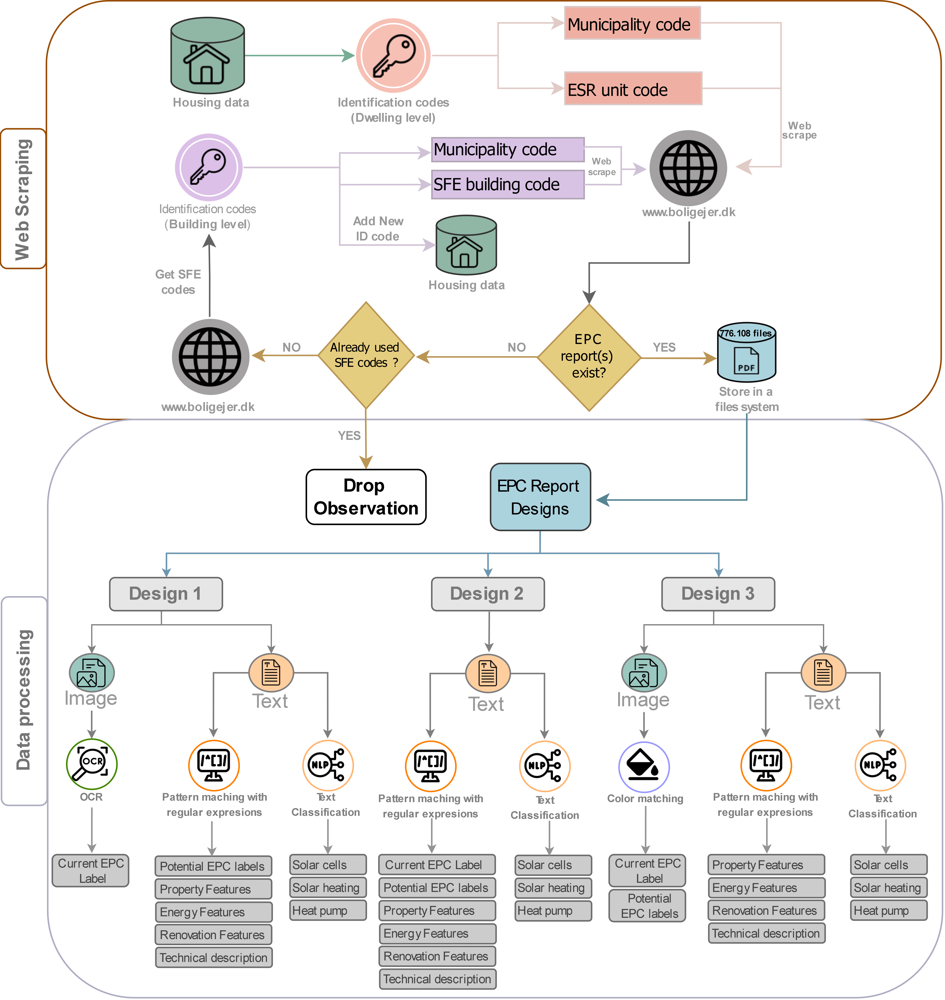
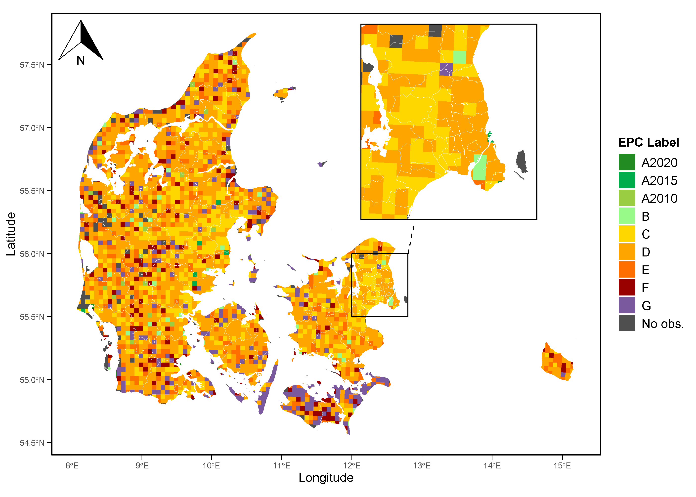
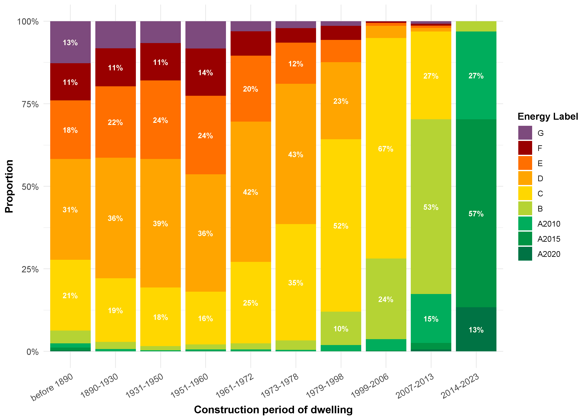
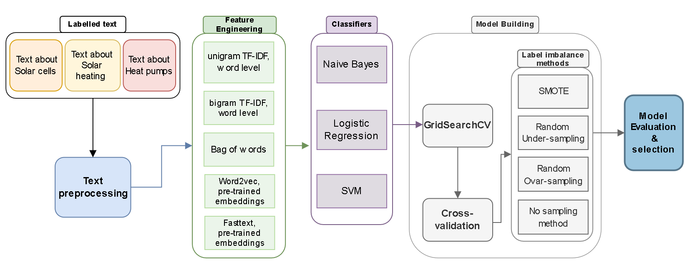

4.2 EPC Reports data
There are two sources which offer open access to the EPC reports in Denmark, which are Sparenergi (2015) and Boligejer (n.d.). The primary difference between the two sites is that the former delivers only the latest EPC report of a building to the user, whereas the latter stores and provides access to all historical reports for buildings. In addition, the Danish Energy Agency offers access to their EMO EPC database upon request. To obtain the EPC data, the website “boligejer.dk” (https://www.boligejer.dk/) was chosen (Boligejer n.d.). The reasons are threefold: first, there are fewer drawbacks when scraping the data; second, it gives access to both historical and latest EPC reports of properties. Lastly, it simplifies the process of merging with our housing data.
Information extraction from EPC reports
Figure 4.1 shows the workflow of the data extraction process made to collect the EPC PDF files and extract information from them. Once the housing data is collected, we utilize the ESR and municipality identification codes to search and download the pdf files from the website “boligejer.dk”. During the data-gathering process, it was observed that certain properties, particularly apartment buildings, had their EPC reports linked to the SFE (Samlet Fast Ejendom) code rather than the ESR code. The SFE code is an identification code for the entire building, whereas the ESR code is specific to individual units. Similar to the ESR code, the SFE code is only unique in combination with the municipality code. Consequently, to address this issue, we obtain the SFE codes for properties lacking EPC reports under their ESR codes by intercepting a specific HTTP GET request on the Boligejer (n.d.) website, where the SFE code of the dwelling unit is stored in a JSON file. Once obtained, we proceed in the same manner that we do with ESR codes. Once we have collected all possible PDF files, we end up with 776.108 reports.
During the information extraction process, we identify three major design differences in the reports over the period. According to the data, the initial design in our sample, referred to as Design 1, was used until around 2012, after which Design 2 was introduced. The most recent design, design 3, was adopted around the winter of 2021. These designs not only differ in the design and layout but also in the type of information provided to the reader.
% design differences There are several key distinctions between the three designs regarding the information provided. Design 1 does not include a potential energy label from implementing all profitable renovations. Neither Design 1 nor 2 provide standardised energy consumption in kWh, whereas Design 3 includes this information. Furthermore, Design 3 does not include energy consumption saved from profitable renovations. Additionally, none of the designs provides an estimated investment cost for implementing non-profitable renovation suggestions.
% extracting text The majority of the information of interest is in text format for all EPC designs. We extract the text using Python and various libraries such as pyMuPDF and pdfplumber. Once the text data is extracted, we use regular expressions and pattern-matching techniques to retrieve the relevant information from the text. In design 2 we only use regular expressions as all necessary data in that design is represented in text format. However, In design 3, all energy labels, i.e. the registered EPC label and the potential EPC label after implementing profitable and non-profitable renovations, are in image format. Moreover, in Design 1 the registered EPC label is in image format but the potential energy label of the building for implementing all renovation suggestions is in text format.

Extracting EPC labels
To extract the EPC labels in Design 1 we train and run an optical character recognition (OCR) model to identify the registered EPC labels of buildings. To train and run an OCR algorithm, we used the library Pytesseract (see: Hoffstaetter (2024)), which is a wrapper for Google’s Tesseract-OCR Engine (see: “Tesseract” (2024)). This is an open-source tool developed by Google that converts images containing text to machine-readable text data. The engine is pre-trained and employs advanced machine-learning algorithms that can work out of the box for up to 100 languages. We train the engine on 950 images to fine-tune it towards our data, and then we employ the Legacy Tesseract model on design 1 reports. In design 3, we used color matching to identify the labels by finding the unique RGB (Red, Green, Blue) code of the pixels of each EPC label image; we could determine both the current EPC label and the potential EPC label of the building after implementing either profitable or all renovations. This approach was not used for Design 1 because the images in those reports were designed in a way that made it too difficult to accurately identify the labels. Additionally, design 1 includes three minor layout changes over the time period that affected the positioning and the colours of the images, further complicating accurate label identification using colour matching.
Standardizing energy variables
The variation in the information given in each design creates challenges in making the data from each design comparable. We address these differences in the following ways: First, we convert the source-specific energy consumption from Design 1 and Design 2 into standardised energy consumption in kWh, as done in Design 3. We achieve this by applying the calorific values for each energy source that a building uses as outlined in the so-called EPC handbook for Denmark (Bekendtgørelse om Håndbog for Energikonsulenter), which is issued by the Danish Ministry of Climate, Energy, and Utilities (Klima-, Energi- og Forsyningsministeriet 2021). Appendix \ref{sec:Appendix Calorific values shows the calorific values used in this study. The calorific value or heating value of a substance is a measure of how much energy is released for a specific amount of fuel burned. In the EPC handbook for Denmark, the calorific value is expressed in kilowatt-hours per given unit of specified heat source, e.g. kWh/ton for wood fuels. This metric allows us to compare different heating sources in the same unit, i.e. kilowatt-hours. It is worth noting that the calorific value is not a constant, and it varies from time to time. The value depends on several factors such as moisture and the overall quality of the fuel. Take natural gas as an example of the variation of the calorific value. Natural gas primarily consists of methane, but it also contains other hydrocarbons such as ethane, propane, and butane. The calorific value is highly dependent on the proportion of these components which may vary over time. However, for simplicity, we will assume they are relatively constant during our sample period. % Next, we calculate the energy saved in source-specific units for design 3 by dividing the energy cost saving for each energy source that a building uses by the receptive prices stated in the reports. Subsequently, we convert the source-specific energy saved to kilowatt-hours for all designs using the same calorific values previously mentioned. Finally, we use the conversion table i.e. Table \ref{table: conversion table EPC, to convert all the EPC labels for all different EPC schemes to the latest EPC scheme.
Table \ref{table: EPC data summary shows the summary statistics of our main variables from the EPC reports. The most dominant label in our dataset is label D, which constitutes more than 32% of our sample. Similar to many of the previous studies, throughout our analysis, label D will serve as the reference category.
| Continuous Variables | |||||||||
|---|---|---|---|---|---|---|---|---|---|
| Variable | N | Mean | Std. Dev. | Min | Pctl. 25 | Pctl. 75 | Max | Unit | |
| Total heating demand | 582,690 | 19,049 | 9,867 | 818 | 11,194 | 24,990 | 63,680 | kWh | |
|
Total investment cost from profitable renovations (TIC) |
728,794 | 205,322 | 425,372 | 0 | 2,100 | 186,600 | 3,499,800 | DKK | |
|
Total energy cost saved from all renovations (TECS) |
728,794 | 35,684 | 317,907 | 0 | 3,300 | 21,996 | 58,833,400 | DKK | |
| Categorical Variables (Total = 728,794): | |||||||||
| Variable | Category | Frequency | % of Total | Variable | Category | Frequency | % of Total | ||
| Current Energy label | A2020 | 4,203 | 0.58% | All suggestions - Roof and attic | No | 283,067 | 38.84% | ||
| A2015 | 17,405 | 2.39% | Yes | 445,728 | 61.16% | ||||
| A2010 | 18,669 | 2.56% | All suggestions - Walls | No | 376,982 | 51.73% | |||
| B | 49,610 | 6.81% | Yes | 351,813 | 48.27% | ||||
| C | 196,686 | 26.99% | All suggestions - Solarcells | No | 404,859 | 55.55% | |||
| D | 234,511 | 32.18% | Yes | 323,936 | 44.45% | ||||
| E | 116,880 | 16.04% | All suggestions - Heating system | No | 390,441 | 53.57% | |||
| F | 56,392 | 7.74% | Yes | 338,354 | 46.43% | ||||
| G | 34,439 | 4.73% | All suggestions - Water system | No | 500,628 | 68.69% | |||
| Label jump | 0 | 277,548 | 38.08% | Yes | 228,167 | 31.31% | |||
| (distance from current label to potential label from all renovations suggestions) | 1 | 190,708 | 26.17% | All suggestions - Floor | No | 428,249 | 58.76% | ||
| 2 | 130,226 | 17.87% | Yes | 300,546 | 41.24% | ||||
| 3 | 68,821 | 9.44% | All suggestions - windows and doors | No | 236,154 | 32.4% | |||
| 4 | 35,322 | 4.85% | Yes | 492,641 | 67.6% | ||||
| 5 | 15,867 | 2.18% | All suggestions - District heating | No | 725,454 | 99.54% | |||
| 6 | 6,913 | 0.95% | Yes | 3,341 | 0.46% | ||||
| 7 | 2,278 | 0.31% | Energy label potential | A2020 | 21,892 | 3% | |||
| 8 | 1,112 | 0.15% | (All renovations suggestions) | A2015 | 16,197 | 2.22% | |||
| Boiler | No | 568,984 | 78.07% | A2010 | 91,938 | 12.62% | |||
| Yes | 159,811 | 21.93% | B | 137,632 | 18.88% | ||||
| Wood Stove | No | 620,750 | 85.17% | C | 222,217 | 30.49% | |||
| Yes | 108,045 | 14.83% | D | 78,937 | 10.83% | ||||
| Oil stove | No | 728,692 | 99.99% | E | 20,896 | 2.87% | |||
| Yes | 103 | 0.01% | F | 7,097 | 0.97% | ||||
| Masonary heater | No | 728,133 | 99.91% | G | 4,147 | 0.57% | |||
| Yes | 662 | 0.09% | No label | 127,842 | 17.54% | ||||
| Fireplace | No | 708,575 | 97.23% | Energy source | District heating | 428,738 | 58.83% | ||
| Yes | 20,220 | 2.77% | Electricity | 40,563 | 5.57% | ||||
| Heat pump (85% threshold) | No | 591,919 | 81.22% | Electricity and district heating | 21,647 | 2.97% | |||
| Yes | 136,876 | 18.78% | Electricity and natural gas | 15,354 | 2.11% | ||||
| Solar-cells (85% threshold) | No | 660,667 | 90.65% | Electricity and Oil | 10,561 | 1.45% | |||
| Yes | 68,128 | 9.35% | Electricity and wood pallets | 10,088 | 1.38% | ||||
| Solar heating (85% threshold) | No | 666,293 | 91.42% | Natural Gas | 125,750 | 17.25% | |||
| Yes | 62,502 | 8.58% | Oil | 34,807 | 4.78% | ||||
| All suggestions - Heat pump | No | 652,728 | 89.56% | Other source combinations | 5,322 | 0.73% | |||
| Yes | 76,067 | 10.44% | Unknown | 6,767 | 0.93% | ||||
| All suggestions - Other | No | 439,279 | 60.27% | Wood | 2,176 | 0.3% | |||
| Yes | 289,516 | 39.73% | Wood and District heating | 1,376 | 0.19% | ||||
| All suggestions - Solar heating | No | 623,313 | 85.53% | Wood and Electricity | 17,160 | 2.35% | |||
| Yes | 105,482 | 14.47% | Wood and Pallets | 8,486 | 1.16% | ||||
| All suggestions - Ventilation | No | 708,529 | 97.22% | ||||||
| Yes | 20,266 | 2.78% | |||||||
Moreover, Figure 4.2 shows the distribution of the most frequent label across the whole country at a 4x4 km grid level. The figure shows that labels D and C are most dominant across the entire country. We see some cluster formations of lower energy efficiency labels on the main land, towards the North sea. Particularly around the towns Brande and Billund. Moreover, there are very little signs of dominant areas with low energy efficiency labels in the bigger cities such as Aarhus and Copenhagen. However, the clearest cluster formation is on the Islands called Langeland, Lolland, Falster and Møn where the most dominant labels are either G or F.
In addition, the most frequent label given by the EPC experts as the energy label potential of a property, after implementing all renovation recommendation, is the label C, which represents more than 30% of our sample. Interestingly, about 20,5% of our sample, or 149,706 observations, receive the same label as they currently have. Meaning, that although some are given renovation recommendations that can improve their efficiency, that doesn’t mean that the improvements will lead to higher EPC label.
Furthermore, close to 62% of our sample use either only district heating or district heating in combination with other sources. The second most common energy sources in our sample is Natural gas where close to 20% of our sample uses only natural gas or natural gas in combination with other sources.

Note: “No obs.” category refers to places where we don not have any observations on.
Finally, the EPC data in combination with our housing data shows some interesting patterns. There is a clear relationship between EPC labels and the year properties are built, as shown in Figure 4.3. From the period 1979-1998 there is a significant increase in higher energy efficient properties until the period 2014-2023 where the lowest energy efficiency obtained from newly constructed buildings is the label B. It’s worth pointing out that the construction periods used in this paper resembles the one used by \citet{jensen_market_2016 paper, with the minor difference that we add the new period 2014-2023 and the period older than 1890. According to \citet{jensen_market_2016, their construction periods reflect both building tradition and energy performance.

Note: Bars without the percentage written on them are below 10%.
Text classification
In relation to Wahlström (2016) findings, home buyers might focus more on energy-efficient systems than energy-efficiency indicators such as energy consumption or EPC labels. Our data does account for the heating sources and certain energy systems but not for green energy systems such as solar cells, solar heating, or heat pumps. To account for this we utilise the technical description data from the EPC reports. The technical description is structured into predefined sub-chapters, each filled in with related descriptions made by the accredited experts conducting the reports. These sub-chapters include sections on whether the building has or should have solar cells, solar heating, and heat pumps. The issue, however, arises from the fact that the technical descriptions are written by different experts. This applies also to the descriptions of the renovation suggestions. What this means is that the text may vary significantly even though it conveys similar message, either directly or indirectly, of the property’s status regarding the systems. Take, for example, the following three possible comments given by experts regarding heat pumps from the technical descriptions:
- “Heat pumps are recommended to be installed.”
- “Installing heat pumps is not considered to add any additional benefits given the current system of property.”
- “Owners should think about installing heat pumps.”
These three sentences all indicate in different ways that the properties do not have heat pumps installed. This makes it difficult to accurately assess the entire sample to identify properties with installed heat pumps, solar cells, or solar heating using only pattern matching with regular expressions. Instead, we address this challenge by performing a Natural Language Processing (NLP) task called text classification. Figure 4.4 illustrates the workflow of training and building the text classification models. We define three independent binary classification problems, each for different green energy systems, i.e. one for predicting if the building has solar cells, another for solar heating, and the third for heat pumps. In this sup-chapter, the term “model” will refer to a combination of the classifier, feature engineering method, and sampling technique used. Over the course of the whole process, for each classification problem, we will compare three different classifiers in combination with 4 different sampling methods, three of which account for sample imbalance and 5 different feature engineering methods. However, there are a few exceptions to these combinations. Naive Bayes doesn’t run on negative values, and both embeddings have negative and positive input features. Therefore, we will not use embeddings when using Naive Bayes as a classifier. Additionally, we only run the SMOTE sampling method on a selected combination of classifiers and feature engineering methods because some combinations are too heavy to compute. All in all, we ended up making 150 different models, 50 models for each classification problem.

All classification models for each of the three problems go through the same procedure as shown in Figure \ref{figure: workflow text classification models. We begin by splitting the technical description text for relevant chapters about the three heating systems. Then, we create unique training data for each classification problem, either manually or by analysing sentence patterns using NLP libraries such as Spacy and NLTK in Python (for Spacy library see: Explosion AI (spaCy’s developing organization) (2024) and for NLTK library see Bird and Loper (2023)). Next, we move on to pre-process the text by initially eliminating all duplicate entries. Removing duplicates is crucial to maintain accuracy in the modelling process, ensuring the models remains unbiased. Following this, we convert the text to lowercase and remove certain stop words using pre-defined stop-word list for the Danish language, provided by the NLTK library (Bird and Loper 2023). Our final step in the pre-processing phase is to tokenize and lemmatize the text using the Spacy library. Tokenization involves splitting a sentence or a paragraph into words or tokens. According to Jurafsky and Martin (2024), lemmatization is defined as:
“the task of determining that two words have the same root, despite their surface differences. For example, the words sang, sung, and sings are forms of the verb sing. The word sing is the common lemma of these words, and a lemmatizer maps from all of these to sing.” (Jurafsky and Martin 2024, 5)
Ultimately, the purpose of lemmatising the text is to standardise word forms to make it more straightforward to analyse and compare text.
Feature Extraction process
Following the pre-processing step, we move to the feature engineering step, where we transform the text into numerical values so that the classifiers can quantify the data. There are many ways to convert text to numerical values. However, there is no one-size-fits-all consensus on which method to use. The same applies to choosing the classifier to predict the labels. It is a good practice to use different combinations of methods and determine the best approach by optimising for performance metrics like accuracy, recall, and precision, or a combination of these metrics, as we will elaborate on later in this chapter. For the feature engineering stage, we will use five different techniques, which are bag of words, term frequency-inverse document frequency (TF-IDF) with unigram (1-grams) at the word level, TF-IDF with bi-grams (2-grams) at the word level, pre-trained word2vec embeddings for danish language and pre-trained fasttext embedding for danish language. The bag of words method converts the text to a numerical vector where each value represents the frequency of each word in the document. TF-IDF is a method that measures the importance of a term in a document relative to the collection of terms in the document. To compute the TF-IDF, we begin by calculating the term frequency (TF) i.e. the frequency of a term in a document (e.g. the number of times a word appears in a paragraph) and divide it by the total number of terms in that document. Next, the inverse document frequency (IDF) is calculated, which measures how important the term is across the entire corpus. The IDF is calculated by taking the logarithm of the total number of documents divided by the number of documents containing the term. Finally, we multiply TF and IDF to get the TF-IDF score. A document can be defined as e.g. a single paragraph, unit of text or an article. In our case a document represents a unit of text. The term in a document can be defined as a word or character. In this study, we will only be using word-level TF-IDF due to computation performance. Moreover, we use TF-IDF on both uni-gram and bi-gram. With uni-gram, the term is defined as a single word, but with bi-gram, we use a combination of 2 words.
We will also use pre-trained word2vec and fasttext embedding models for the Danish language. The main distinction between these two pre-trained embeddings and the other methods mentioned earlier is that these embeddings contain vectors with semantic attributes. Word embeddings map words to points in multidimensional semantic space and are derived from the distribution patterns of surrounding words. The word2vec model that we use was compiled by Sørensen (n.d.) and uses the skip-gram algorithm with a window spanning 5 words around the central word. The model was trained on data consisting of more than 1 billion words, resulting in 500-dimensional word embedding vectors (Sørensen n.d.). The pre-trained fasttext embedding was created by Grave et al. (2018). The fasttext model was trained on data from Common Crawl and Wikipedia, leveraging the Continuous Bag of Words (CBOW) algorithm and integrating character level n-grams of length 5 to generate 300-dimensional vectors.
Binary models
The next step is choosing the classifier to predict the labels. There are many different machine learning algorithms that can be used as a classifier. However, many differ in accuracy or precision. In this study, we will use Naïve Bayes, logistic regression, and linear support vector machines (SVM). We chose Naive Bayes and logistic regression because they are simplistic and efficient. They offer clear interpretability because both can be interpreted in terms of probabilities, and they are not computationally complex. With that being said, these models have also been shown to either outperform or maintain a similar level of accuracy compared to more complex models (see e.g. studies by Shah et al. (2020)). Additionally, we will also use a relatively more complex model called support vector machines (SVM). SVM is a popular choice and has shown great results (see e.g. studies by Sun, Lim, and Liu (2009), wahba_comparison_2022). All classifiers in this study were implemented using the Scikit-learn library in Python.
| Classification problem | True | False |
|---|---|---|
| Solar-cells | 7,915 | 26,943 |
| Solar-heating | 4,203 | 37,672 |
| Heat pump | 9,389 | 65,491 |
Table 4.2 illustrates the number of observations for each category (i.e. True or False) in the training data. From the table we can see that our training data is relatively imbalanced. In a binary classification setting, a dataset is considered imbalanced if there are significantly fewer observations in one category compared to the other category (Sun, Lim, and Liu 2009). Many industries, including financial management, frequently deal with imbalanced data sets, e.g. for fraud detection. Therefore, imbalanced data is not unusual. However, many of the machine learning algorithms used for classification problems are based on the assumption that both labels have similar misclassification costs (Sun, Lim, and Liu 2009). Therefore, predicted labels are assumed to be based on a balanced distribution of labels. This can lead to the classifier used becoming biased towards the majority class and giving poor predictions for the minority class. Jurafsky and Martin (2024) To account for this, we will utilise three common ways, which are an over-sampling method, an under-sampling method, and Synthetic Minority Over-sampling Technique (SMOTE). The over-sampling method involves randomly picking observations from the minority class and duplicating them until the observations between the two classes are balanced. Similar to over-sampling, under-sampling randomly removes observations in the majority class until both classes have the same amount of observations.
Finally, The SMOTE method is a version of the over-sampling technique where we create synthetic observations using the features from observations in the minority class. This is done by selecting random observations in the minority class and identifying k-nearest neighbouring observations. The neighbours are other observations from the minority class that is closest to the observation selected in terms of feature values. We select a random number between 0 and 1 as well as a random neighbour. Then, we calculate the difference between the neighbour and the observations selected and multiply that by a random number. Finally, we add the result to the selected observation, making the synthetic observation a blend of the neighbouring observation and the selected observation. In this study, when using SMOTE, we will be using five neighbours for each selected observation. All sampling methods are applied within the cross-validation process on the folds that are treated as the training data (Sun, Lim, and Liu 2009).
% Model training and valuation : cross-validation and grid search During the training process, we use the 5-fold cross-validation and GridSearchCV function from the scikit-learn library in Python (see: Pedregosa et al. (2011) for more details on scikit-learn library) to optimise and fine-tune the models. Hyperparameters are configurations that are used to adjust the optimization of a classification algorithm. In the Naive Bayes classifier, we tune different levels of the hyperparameter called alpha, which is a laplace smoothing parameter to handle zero probabilities. In logistic regression, we tune different levels of the hyperparameter C which is the inverse of the regularisation strength. Hyperparameter C is a regularization method that prevents the model from overfitting by adding a penalty to the model’s complexity. Similarly, we tune the hyperparameter C in the SVM classifier. During the training process, GridSearchCV conducts a search over specified hyperparameter values. Each hyperparameter configuration is validated via 5-fold cross-validation, where the labelled data is randomly split into five groups. Then, one group is held as a hold-out group, and the model is trained on the remaining groups, which we then use to predict the labels on the hold-out group. This process is repeated five times, ensuring each group serves as a validation set once. Finally, the best hyperparameter combination is identified based on the highest average precision value across the five folds. After training all 150 models and determining their best hyperparameters, we evaluate their performance based on accuracy, recall, precision, and F1 score. Subsequently, we select the models for each classification problem by considering both the highest accuracy and achieving the best balance between recall and precision.
Model Evaluation
Accuracy represents the ratio between correctly predicted observations and the total number of observations. The mathematical expression for accuracy is:
\[\begin{equation} \text{Accuracy} = \frac{\text{TP} + \text{TN}}{\text{TP} + \text{TN} + \text{FP} + \text{FN}} \end{equation}\]
where TP denotes True positive observations, TN denotes true negative observations, while FP and FN represent False positive and false negative observations, respectively. Recall measures the ratio between correctly predicted positive observations to the total number of positive observations. It measures how well the model can correctly identify positive observations. By maximizing recall we want to capture as many positive observations as possible. The mathematical expression for recall is:
\[\begin{equation} \text{Recall} = \frac{\text{TP}}{\text{TP} + \text{FN}} \end{equation}\]
Precision represents the ratio between the correctly predicted observations and all observations identified as positive. In other words, it tells us how many of the observations predicted as positive labels are truly positive. By maximizing Precision we focus on minimizing false positives. The mathematical expression for precision is:
\[\begin{equation} \text{Precision} = \frac{\text{TP} + \text{TN}}{\text{TP} + \text{FP}} \end{equation}\]
Finally, the F1 score is the harmonic mean of recall and precision. It gives a balanced evaluation of a classifier’s performance by accounting for both false positives and false negatives.
After running all the steps using different model specifications for all three classification problems, we found that logistic regression and SVM have the best performance in terms of both accuracy and balance between recall and precision. The differences in F1 score and accuracy between the two classifiers are marginal, regardless of the feature engineering methods or sampling approach used for these classifiers. The performance differences between the two classifiers using different sampling techniques are also marginal. Interestingly, models that use bi-gram TF-IDF at the word level outperform all other feature extraction methods in terms of recall, precision, and accuracy, including pre-trained embeddings. The text in all three classification problems tends to be relatively small and straightforward, favouring the simplicity and interpretability of TF-IDF. While pre-trained embeddings are effective at capturing semantic connections, they may not provide significant benefits for the simple text used in this study.
By applying Occam’s razor principle, we select logistic regression as the classifier for all three classification problems, employing bi-gram TF-IDF at the word level as the feature engineering method and opting not to use any sampling method.
Occam’s razor principle, which states that
“plurality should not be posited without necessity.” (Brian Duignan 2024, para. 1)
suggests that when dealing with competing hypotheses, the one with fewer assumptions should be preferred. In simpler terms, it implies that the simplest explanation is usually the correct one. We chose logistic regression for its efficiency, interpretability, and computational efficiency. Furthermore, logistic regression provides probabilities of the outcome, allowing us to conduct robustness tests by varying threshold levels from the main model. The main model systematically uses the threshold of 0.5 to classify observations into one of the two classes. However, we will use 85% as our main threshold. If the predicted probability is greater than or equal to 85%, the observation is assigned to the positive class; otherwise, it is classified to the negative class. Moreover, we use the bi-gram TF-IDF word-level method as it outperforms all other methods.
Finally, we chose not to use any sampling methods. As stated earlier, sampling methods account for class imbalances and help detect minority classes. However, our results indicate no significant improvement from using sampling methods. Moreover, neither the over-sampling nor the SMOTE methods used in this study add any valuable information. Furthermore, when using SMOTE there is a risk that the synthetic observations do not resemble the minority class. Additionally, the under-sampling method comes at the great cost of losing valuable information. In relation to that, Sun, Lim, and Liu (2009) compared various sampling methods to address imbalanced data. They found that sampling methods did not improve the performance of their classifier, and they argued that one should focus on setting an appropriate threshold rather than using sampling methods.
Details on the final text classification models used, as well as the number of observations per category for each classification problem, are shown in Table 4.3. All three trained models achieved over 90% accuracy and a strong balance between recall and precision. Appendix C shows the training results of all 150 text classification models.
| Variable | Threshold | True | False | Classifier | Feature Engineering Method |
Sampling method |
Recall | Precision | F1 score | Accuracy |
|---|---|---|---|---|---|---|---|---|---|---|
| Solar cells | 85% | 68,128 | 660,666 | Logistic Regression |
TF-IDF bi-gram, word level |
No sampling | 0.9845 | 0.9861 | 0.9853 | 0.9881 |
| Solar heating | 85% | 62,502 | 666,292 | Logistic Regression |
TF-IDF bi-gram, word level |
No sampling | 0.9564 | 0.9797 | 0.9679 | 0.9936 |
| Heat pumps | 85% | 136,876 | 591,918 | Logistic Regression |
TF-IDF bi-gram, word level |
No sampling | 0.9700 | 0.9856 | 0.9787 | 0.9947 |